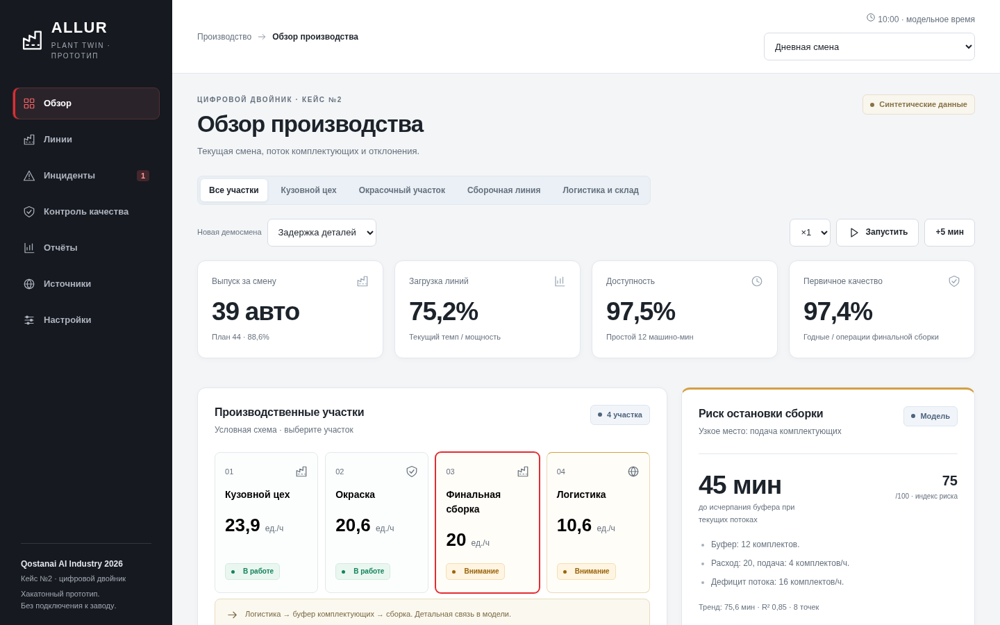
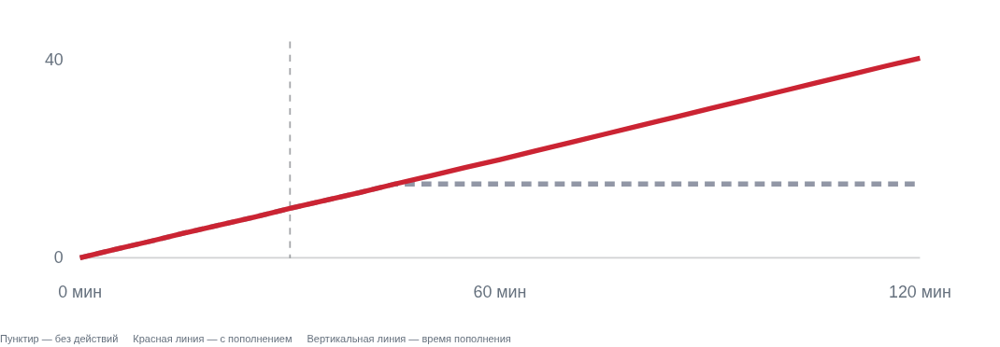
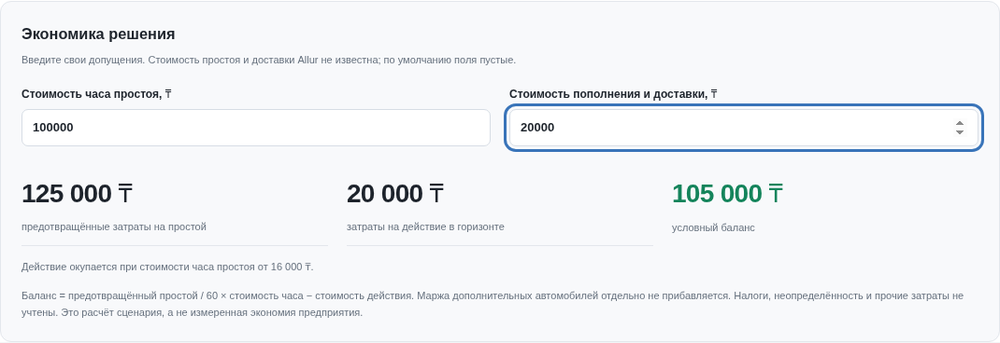
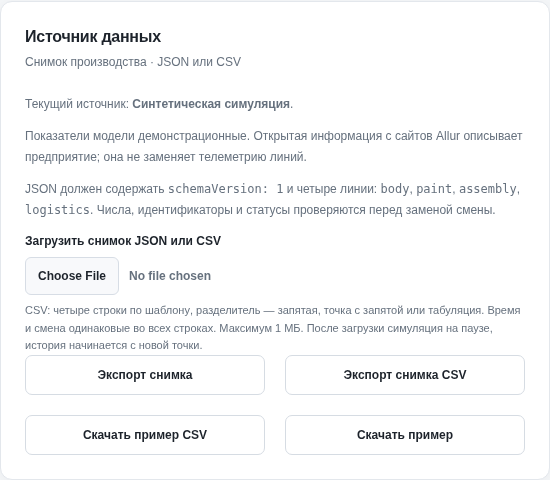

01
Ортақ көрініс
Өнім шығару, жүктеме, бос тұру және сапа көрсеткіштері бір панельде.
Allur Plant Twin — өндірістік учаскелерді бақылауға және жинақтау желісіндегі қор тапшылығын болжауға арналған цифрлық егіз прототипі.
Жұбанов университеті
Ақтөбе қаласы
Капитан: Бижан Әлижан
Қатысушылар: Қанымбек Марат
Құлтас Баубек
Бөлшектердің жеткізілуі баяуласа, жинақтау желісі қор таусылғанда тоқтайды. Операторға жағдайды ертерек байқап, әрекет етуге қалған уақытты білу қажет.
Өнім шығару, жүктеме, бос тұру және сапа көрсеткіштері бір панельде.
Инцидент, зардап шеккен учаске және оператор әрекеті өзара байланысады.
Қор қанша уақытқа жетеді және оны қашан толықтырған тиімді?
Нысаналы пайдаланушылар: ауысым басшысы, логистика диспетчері, өндіріс инженері. Бұл — кейске негізделген гипотеза; Allur қызметкерлерімен сұхбат жүргізілген жоқ.

Жобаның нақты скриншоты: жеті бөлім, учаскелер картасы, ауысым көрсеткіштері және оператор әрекеттері. Интерфейс қазір орыс тілінде; слайдтар қазақ тілінде.

Қор: 12 жиынтық · Шығын: 20/сағ · Жеткізу: 4/сағ. Ағын өзгермесе, желі тоқтайды. Карта — зауыттың нақты жоспары емес, шартты схема.
Кездейсоқ орман 60 минут ішінде қордың таусылу қаупін бағалайды. 600 синтетикалық ауысым жасалған; 119 ауысым бағалау үшін бөлек қалдырылған.
Толықтық: 90,2%
Оң болжамдардың дәлдігі: 72,6%
F1 бойынша қарапайым баланс әдісі жақсырақ. ML моделі қосымша сигнал береді; Allur тарихында тексерілмеген.
Бөлек диагностика APS ақауын басқа компонент ақауынан ажыратады. Үйрету: 48 000, баптау: 12 000, бағалау: 16 000 жазба.
Толықтық: 97,1%
Оң болжамдардың дәлдігі: 41,7%
Болашақ ақаудың уақытын болжамайды. Теріс класс көліктің ақаусыз екенін білдірмейді. Allur-ға жарамдылығы бағаланбаған.
толықтыру уақыты
алдын алынған бос тұру
қосымша модельдік өнім

Бірдей бастапқы деректер, 120 минуттық көкжиек. 30-минутта +30 жиынтық қосылып, жеткізу 21/сағ болады. Нәтиже — симуляция; Allur-дың өлшенген тиімділігі емес.
Мысалдағы жорамал: бос тұру — 100 000 ₸/сағ, толықтыру — 20 000 ₸. 30-минуттағы әрекет 75 минут бос тұрудың алдын алады.

Ставкалар бастапқыда бос. Бұл Allur бағасы немесе нақты үнем емес. Салықтар, белгісіздік және барлық енгізу шығындары есепке алынбайды.

CSV: Papa Parse 5.5.3, MIT. Бос не қате мәндер қабылданбайды; файл шегі — 1 МБ.
Импортталған тоқтау күйі сақталады. Синтетикалық ML кәсіпорын деректеріне автоматты түрде қолданылмайды.
MES/ERP байланысы, ортақ серверлік тарих және рөлдер — пилоттың келесі кезеңі.
автоматты тест өтті
браузерлік сценарий тобы
390 / 768 / 1440 px
ThingsBoard, Ditto, Grafana және Node-RED құжаттары салыстырылды. Нарық көлемі, сұраныс және баға тексерілмеген; олардың коды жобаға көшірілмеген.
Allur Plant Twin қор тапшылығын түсіндіреді, әрекет ету уақытын салыстырады және шешімнің шартты құнын көрсетеді.
Капитан: Бижан Әлижан
Қатысушылар: Қанымбек Марат · Құлтас Баубек
Құралдар: OpenAI Codex — код, құжаттама, тексеру; Figma — дизайн жұмысы. Скриншоттар жұмыс істейтін прототиптен алынған. Зауыт симуляциясы синтетикалық, Scania диагностикасы — бөлек модуль.